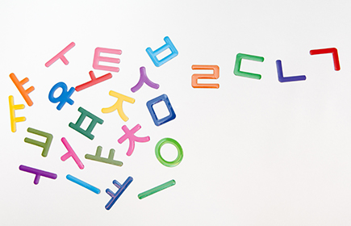

Хангыль
Хангы́ль (кор. 한글), чосонгы́ль (조선글), корёгы́ль (고려글) — фонематическое письмо корейского языка. Постановление о новой письменности было издано ваном Сечжоном в 1446 году и называлось Хунмин чоным (훈민정음). Отличительной особенностью хангыля является то, что буквы объединяются в группы, примерно соответствующие слогам. Этот вид письменности был разработан в середине XV века и является основным в Южной Корее и единственным в КНДР. 
Официальные названия
Современное название хангыль (한글) было введено Чу Сигёном в 1912 году. Оно одновременно означает «великая письменность» на древнекорейском и «корейская письменность» на современном корейском языке.
На ханча это название записать нельзя, хотя первый слог, хан (한), использующийся в значении «корейский», может быть записан как 韓. Слог 글 когда-то произошёл от иероглифа 契, но сейчас в таком виде записан быть не может,
так как натурализовался в корейском языке.
В Северной Корее распространено название Чосон мунча (кор. 조선 문자), как соответствующее другому названию страны.
Согласно мнению некоторых учёных,
изначально алфавит назывался Хунмин Чоным (кор. 훈민정음?, 訓民正音;).
Другие названия
- Чосонгыль (조선글), «чосонская письменность» — используется в Северной Корее, по принятому там самоназванию Кореи — «Чосон» (조선).
- Уригыль (우리글), «наша письменность» — название используется как в Северной, так и в Южной Корее.
- Куксо (국서 / 國書) и кунмун (국문 / 國文), «национальное письмо» — эти названия использовались в начале XX века, сейчас считаются устаревшими.
До начала XX века в литературе хангыль практически не использовался, считался слишком простым. Вместо него использовалась основанная на китайских иероглифах письменность ханча. Литературная элита Кореи называла хангыль надменно:
- Онмун (кор. 언문?, 諺文; «народное письмо»).
- Амгыль (암글; «женское письмо»). 암, вероятно, происходит от иероглифа 陰, инь, который, поставленный перед существительным, обозначает женский род.
- Ахэткыль (아햇글 или 아해글; «детское письмо»).
Однако эти названия сейчас являются устаревшими. Ханча редко используется в Южной Корее и почти не используется в Северной Корее.
История
Хангыль был создан группой корейских учёных и опубликован в 1446 году; работа шла по заказу четвёртого царя династии Чосон Сечжона Великого.
Существует также легенда, что хангыль был изобретён буддистским монахом Соль Чхоном. В то время буддистская литература пользовалась популярностью, однако значительной частью была написана на тибетском и санскрите, в основе письменности которых лежало письмо брахми.
Хангыль, как и индийские разновидности письма, является фонетическим (каждому звуку соответствует свой знак). Некоторые из знаков хангыля похожи на знаки деванагари. По мнению лингвиста Гэри Ледьярда, одним из источников хангыля было монгольское квадратное письмо, созданное Пагба-ламой. А. А. Бурыкин обращает внимание на сходство корейских знаков для гласных с монгольскими.
Состав алфавита
Элементы хангыля называются чамо (кор. 자모, 字母, заимствование из кит. zìmǔ — цзыму) или нассори (낱소리). Ча (кит. 字 цзы) означает «буква», а мо (кит. 母 му) переводится как «мать». Чамо — основные блоки, из которых построена корейская письменность.
Всего существует 51 чамо, 24 из которых эквивалентны буквам обычного алфавита. Остальные 27 чамо представляют собой комбинации из двух или трёх букв (диграфы и триграфы). Из 24 простых чамо четырнадцать являются согласными (чаым, кор. 자음, 子音 «детские звуки»), а остальные десять являются гласными (моым, кор. 모음, 母音 «материнские звуки»). Из шестнадцати диграфов пять сильных согласных образуются из сдвоенных простых согласных (см. ниже), а остальные одиннадцать формируются из разных букв. Десять гласных чамо соединяются в одиннадцать дифтонгов. Далее дан полный состав алфавита:
- 14 простых согласных: ㄱㄴㄷㄹㅁㅂㅅㅇㅈㅊㅋㅌㅍㅎ, плюс устаревшие ㅿㆁㆆㅱㅸㆄ
- 10 простых гласных: ㅏㅓㅗㅜㅡㅣㅑㅕㅛㅠ, а также устаревший ㆍ
- 5 сильных (сдвоенных) согласных: ㄲㄸㅃㅆㅉ, плюс устаревшие ㅥㆀㆅㅹ
- 11 диграфов: ㄳㄵㄶㄺㄻㄼㄽㄾㄿㅀㅄ, плюс устаревшие ㅦㅧㅨㅪㅬㅭㅮㅯㅰㅲㅳㅶㅷㅺㅻㅼㅽㅾㆂㆃ и устаревшие триграфы ㅩㅫㅴㅵ
- 1 дифтонгов: ㅐㅒㅔㅖㅘㅙㅚㅝㅞㅟㅢ, плюс устаревшие ㆎㆇㆈㆉㆊㆋㆌ
Согласные ㅊ (чхиыт), ㅋ (кхиык), ㅌ (тхиыт), и ㅍ (пхиып) являются придыхательными производными от ㅈ (чиыт), ㄱ (киёк), ㄷ (тигыт) и ㅂ (пиып) соответственно.
Двойные буквы: ㄲ (ссангиёк: ссан- 쌍 «двойной»), ㄸ (ссандигыт), ㅃ (ссанбиып), ㅆ (ссансиот) и ㅉ (ссанджиыт). Двойные чамо используются для обозначения не сдвоенного, а усиленного звука.
Письменное обозначение чамо
Внешний вид букв хангыля был спроектирован на научной основе.
К примеру, согласная чамо ㅌ (придыхательное т, [tʰ]) построена из трёх горизонтальных палочек, каждая из которых имеет свой смысл: верхняя показывает, что ㅌ — взрывной звук, как и ㄱ (k / g), ㄷ (t/ d), ㅂ (p/b), ㅈ (ʧ /ʤ), каждая из которых имеет такую палочку (последняя буква является аффрикатой, последовательностью фрикативного и взрывного); средняя палочка показывает, что ㅌ является придыхательной согласной, как и ㅎ (х), ㅋ (kh), ㅍ (ph), ㅊ (ʧh), которые также имеют такую палочку; нижняя палочка показывает, что ㅌ является корональным звуком, как и ㄴ (n), ㄷ (t / d), и ㄹ (l / ɾ/ n). Две устаревшие согласные, ᇰ и ᇢ, имеют двойное произношение и состоят из двух элементов, поставленных при письме один над другим для того, чтобы представлять эти два произношения: заднеязычный н ([ŋ]) / немой звук для ᇰ и [m]/ [w] для ᇢ.
Для гласных чамо короткая палочка, соединённая с главной линией, показывает, что звук имеет пару, начинающуюся на звук й. Если таких палочек две, это значит, что гласная начинается на звук й. Положение палочки показывает, к какому началу по идеологии инь и ян принадлежит гласная: «светлому» (сверху или справа) или «тёмному» (снизу или слева). В современных чамо дополнительная вертикальная палочка показывает умлаут, отделяя ㅐ([ɛ]), ㅔ ([e]), ㅚ ([ø]), ㅟ ([y]) от ㅏ ([a]), ㅓ ([ʌ]), ㅗ ([o]), ㅜ ([u]). Однако это не является преднамеренным дизайном, а скорее естественным развитием гласных из дифтонгов, оканчивающихся на ㅣ([i]). Действительно, во многих корейских диалектах, включая официальный сеульский диалект корейского языка, некоторые из них являются дифтонгами до сих пор.
Кроме чамо, в хангыле изначально применялся диакритический знак для того, чтобы показывать тоновое ударение. Слог с восходящим тоновым ударением маркировался знаком точки (·) слева от него (при вертикальной записи); слог с нисходящим тоновым ударением маркировался двойной точкой (:). Теперь такие знаки не используются. Хотя долгота гласных была и остается фонематически значимой в корейском языке, в хангыле она не показывается.
Несмотря на то что некоторые черты хангыля отражают его связь с монгольским алфавитом и, таким образом, с индийской фонологией, другие черты отражают влияние китайской письменности и фонологии.
Порядок букв
Алфавитный порядок букв в хангыле не предусматривает смешения согласных и гласных букв. Порядок схож с аналогами из индийских письменностей, сначала задненёбные звуки, затем коронарные, губные, шипящие и так далее. Однако, в отличие от индийских письменностей, гласные следуют за согласными, а не разбросаны среди них. Современный алфавитный порядок был утвержден Чхве Седжином в 1527 году. Это было перед тем, как появились двойные буквы, представляющие сильные согласные, и перед разделением букв ㅇ и ㆁ. Таким образом, когда южнокорейское и северокорейское правительства придавали официальный статус хангылю, они разместили эти буквы по-разному.
Названия букв
Порядок букв в чосонгыле называется канада (가나다 순), по первым трём чамо. Чамо получили названия от Чхве Седжина Чхве Седжина в 1527 году. КНДР стандартизировала названия при принятии чосонгыля в качестве официального письма.
Названия согласных
Современные согласные имеют имена в два слога, начинающихся и заканчивающихся на согласную:
- ㄱ киёк (기역)
- ㄴ ниын (니은)
- ㄷ тигыт (디귿)
- ㄹ риыль (리을)
- ㅁ миым (미음)
- ㅂ пиып (비읍)
- ㅅ сиот (시옷)
- ㅈ чиыт (지읒)
- ㅊ чхиыт (치읓)
- ㅋ кхиык (키읔)
- ㅌ тхиыт (티읕)
- ㅍ пхиып (피읖
- ㅎ хиыт (히읗)
- ㅇ иын (이응)
Названия гласных
Названия для гласных чамо просто повторяют их произношение. Записываются с начальным ㅇ иын. Таким образом:
- ㅏ а (아)
- ㅐ э (애)
- ㅑ я (야)
- ㅒ е (얘)
- ㅓ о (어)
- ㅔ э (에)
- ㅕ ё (여)
- ㅖ е (예)
- ㅗ о (오)
- ㅘ уа (와)
- ㅙ уэ (왜)
- ㅚ уэ (외)
- ㅛ ё (요)
- ㅜ у (우)
- ㅝ уо (워)
- ㅞ уэ (웨)
- ㅟ уи (위)
- ㅠ ю (유)
- ㅡ ы (으)
- ㅢ ый (의)
- ㅣ и (이)
Устаревшие чамо
Ряд чамо является устаревшим. Некоторые из них представляют звуки, которые уже исчезли из корейского языка; некоторые обозначали звуки китайского языка, которые в корейском вообще никогда не использовались.
Наиболее часто встречающиеся устаревшие буквы:
- ㆍ, или 丶(арэа 아래아) — произношение среднее между о и э (ʌ);
- :, или ㆎ (арээ) — э;
- ㅿ (пансиот 반시옷) — ʝ̃;
- ㆆ (ёрин хиыт 여린 히읗 «светлый хиыт», или твэн иын 된 이응 «сильный иын»): глоттальный звук; легче, чем ㅎ, но не такой гладкий, как ㅇ;
- ㆁ (есиын 옛이응): изначальная буква для носового [ŋ]; сохранилась как самостоятельная буква в северокорейском алфавите, в южнокорейском алфавите объединена с «иыном»;
- ㅸ (кабёун пиып 가벼운 비읍) — β.
Следующие три буквы обозначали звуки китайского языка:
- ㅱ — короткое у;
- ㆄ — ф;
- ㅹ — фф.
Также есть несколько устаревших двойных чамо:
- ㆅ (ссанхиыт 쌍히읗 «двойной хиыт»): [ɣ̈ʲ] или [ɣ̈];
- ㆀ (ссаниын 쌍이응 «двойной иын»): обозначал звук, пришедший из китайского языка.
Слоги хангыля
За исключением некоторых устаревших грамматических морфем, в хангыле буквы всегда объединяются в слоги, состоящие из двух, трёх, реже четырёх чамо: согласная буква обязательно начинает слог и называется начальной (чхосон, 초성, 初聲), гласная или дифтонг идёт следом и называется срединной (чунсон, 중성, 中聲). Слог может завершать (но необязательно) согласная (диграф из согласных), называющаяся завершающей (чонсон, 종성, 終聲). Если в слоге нет явной начальной согласной, он должен начинаться на немую ㅇ. Таким образом, слог в хангыле состоит минимум из двух чамо.
Множества начальных и конечных согласных неравны. Например, ㅇ, обозначающая носовое заднеязычное н, ставится только в конце слога, тогда как двойные буквы (за исключением ᆻ и ᆩ) могут появляться только в начале слога.
Позиция буквы в слоге определяется стандартными правилами, зависящими от формы буквы:
- Компоненты сложных чамо, такие, как ㅄ (пс), ㅝ (уо) или устаревшие ㅵ (пст), ㆋ (уйе), записываются слева направо.
- Срединные буквы записываются под начальными или справа от них, а в случае дифтонгов могут «охватывать» начальную букву снизу и справа: если срединная буква горизонтальная, как ы, тогда она записывается под начальной; если вертикальная, как ㅣ (и), то справа; если сочетает оба стиля, как ㅢ (ый), то «охватывает» начальную букву снизу и справа.
- Завершающая буква, если она одна, всегда записывается снизу, под срединной. Такая буква называется патчим (받침)
Слоги всегда записываются в фонетическом порядке, начальная-срединная-завершающая. Поэтому:
- слоги с горизонтальной срединной записываются сверху вниз: 읍 (ып);
- слоги с вертикальной срединной и простой завершающей записываются по часовой стрелке: 쌍 (ссан);
- слоги с охватывающей срединной переключают направление записи (вниз-вправо-вниз): 된 (твен);
- слоги с завершающим диграфом записываются слева направо и сверху вниз: 밟 (пальп).
Получившийся слог записывается в квадрат такого же размера и формы, как и в ханче.
Без устаревших чамо в хангыле существует 11 172 возможных слога.
Линейный хангыль
В XX в. рассматривался проект реформы хангыля, предусматривающий запись букв в линейном порядке, как в западных алфавитах: ㄱㅡㄴ (кын). Однако реформа не была осуществлена.
Орфография
До XX века в хангыле не существовало официальных орфографических правил. Из-за связывания конечного согласного с начальным гласным следующего слова, диалектных различий и других причин произношение корейских слов потенциально может иметь несколько вариантов. Царь Седжон предпочитал морфологическое написание фонетическому. Однако в хангыле преобладало фонемное озвучивание. С течением времени орфография стала частично морфофонемной, сначала это коснулось существительных, затем и глаголов.
Общество хангыль, основанное Чу Сигёном, в 1933 году объявило о предложении новой, строго морфофонической орфографии, которая стала прототипом современной орфографии в Северной и Южной Корее. После того, как Корея была разделена, Север и Юг пересмотрели орфографию отдельно. Руководящий текст для орфографии корейского алфавита называется «Хангыль мачхумбоп», последняя ревизия которого в Южной Корее была опубликована в 1988 году Министерством образования.
Стиль
Писать на хангыле можно как сверху вниз, так и слева направо. Традиционным стилем, пришедшим из Китая, является запись сверху вниз, причём столбцы идут справа налево. Горизонтальная запись была предложена Чу Сигёном, став к сегодняшнему дню практически стандартом. Со временем был разработан каллиграфический стиль записи на хангыле, который имел много общего с китайской каллиграфией. Такой стиль называется «мёнджо» и в настоящее время используется в изобразительном искусстве, книгах и журналах. Кроме того, некоторые компьютерные шрифты для корейского языка также выполнены в стиле мёнджо.